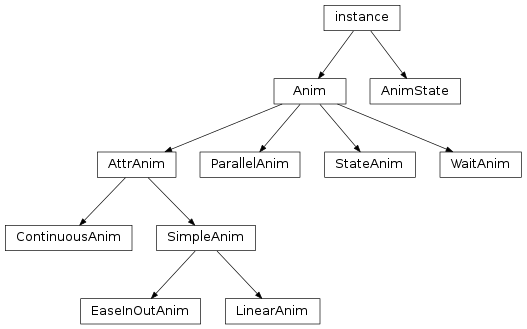

Animation¶

-
class
libavg.avg.Anim¶ Bases:
Boost.Python.instanceBase class for all animations.
-
setStartCallback(pyfunc)¶ Sets a python callable to be invoked when the animation starts. Corresponds to the constructor parameter startCallback.
-
setStopCallback(pyfunc)¶ Sets a python callable to invoke when the animation has finished running. Corresponds to the constructor parameter stopCallback.
-
abort()¶ Stops the animation.
-
start(keepAttr)¶ Starts the animation.
Parameters: keepAttr – If this parameter is set to True, the animation doesn’t set the attribute value when starting. Instead, it calculates a virtual start time from the current attribute value and proceeds from there.
-
isRunning()¶ Returns
Trueif the animation is currently executing.
-
-
class
libavg.avg.AnimState(name, anim, nextName="")¶ Bases:
Boost.Python.instanceOne state of a
StateAnim.Parameters: - name – The name of the state. Used in
StateAnim.setState()andStateAnim.getState(). - anim – The child animation to run when this state is active.
- nextName – The name of the state to enter when this state is done.
- name – The name of the state. Used in
-
class
libavg.avg.AttrAnim¶ Bases:
libavg.avg.Anim-
classmethod
getNumRunningAnims() → int¶ Returns the total number of running attribute-based animations. Useful for debugging memory leaks.
-
classmethod
-
class
libavg.avg.ContinuousAnim(node, attrName, startValue, speed[, useInt=False, startCallback=None, stopCallback=None])¶ Bases:
libavg.avg.AttrAnimClass that animates an attribute of a libavg node continuously and linearly. The animation will not stop until the
abort()method is called.A possible use case is the continuous rotation of an object.
Parameters: - node – The libavg node object to animate.
- attrName – The name of the attribute to change.
- startValue – Initial value of the attribute.
- speed – Attribute change per second.
- useInt – If
True, the attribute is always set to an integer value. - startCallback – Python callable to invoke when the animation starts.
- stopCallback – Python callable to invoke when the animation has finished running, either because abort was called or because another animation for the same attribute was started.
-
class
libavg.avg.EaseInOutAnim(node, attrName, duration, startValue, endValue, easeInDuration, easeOutDuration[, useInt=False, startCallback=None, stopCallback=None])¶ Bases:
libavg.avg.SimpleAnimClass that animates an attribute of a libavg node. The animation proceeds in three phases: ease-in, linear and ease-out. Start and end speed are zero. Ease-in and ease-out phases have the shape of one quadrant of the sine curve.
Parameters: - node – The libavg node object to animate.
- attrName – The name of the attribute to change.
- duration – The length of the animation in milliseconds.
- startValue – Initial value of the attribute.
- endValue – Value of the attribute after duration has elapsed.
- easeInDuration – The duration of the ease-in phase in milliseconds.
- easeOutDuration – The duration of the ease-out phase in milliseconds.
- useInt – If
True, the attribute is always set to an integer value. - startCallback – Python callable to invoke when the animation starts.
- stopCallback – Python callable to invoke when the animation has finished running, either because it has run the allotted time, because abort was called or because another animation for the same attribute was started.
-
class
libavg.avg.LinearAnim(node, attrName, duration, startValue, endValue[, useInt=False, startCallback=None, stopCallback=None])¶ Bases:
libavg.avg.SimpleAnimClass that animates an attribute of a libavg node by interpolating linearly between start and end values.
Parameters: - node – The libavg node object to animate.
- attrName – The name of the attribute to change.
- duration – The length of the animation in milliseconds.
- startValue – Initial value of the attribute.
- endValue – Value of the attribute after duration has elapsed.
- useInt – If
True, the attribute is always set to an integer value. - startCallback – Python callable to invoke when the animation starts.
- stopCallback – Python callable to invoke when the animation has finished running, either because it has run the allotted time, because abort was called or because another animation for the same attribute was started.
-
class
libavg.avg.ParallelAnim(anims[, startCallback, stopCallback, maxAge])¶ Bases:
libavg.avg.AnimAnimation that executes several child animations at the same time. The duration of the ParallelAnim is the maximum of the child’s durations or maxAge, whatever is shorter.
Parameters: - anims – A list of child animations.
- startCallback – Python callable to invoke when the animation starts.
- stopCallback – Python callable to invoke when the animation has finished running, either because it has run the allotted time or because abort was called.
- maxAge – The maximum duration of the animation in milliseconds.
-
class
libavg.avg.SimpleAnim¶ Bases:
libavg.avg.AttrAnimBase class for animations that change libavg node attributes by interpolating over a set amount of time. If
Anim.abort()isn’t needed, there is no need to hold on to the animation object after callingAnim.start()- it will exist exactly as long as the animation lasts and then disappear.The animation framework makes sure that only one animation per attribute of a node runs at any given time. If a second one is started, the first one is aborted.
-
class
libavg.avg.StateAnim(states)¶ Bases:
libavg.avg.AnimAnimation that executes one of several child animations depending on its current state. The state can be None, in which case no animation is executed. None is the initial state. Note that changing the state of an animation during a start or stop callback of a child animation is not possible. An attempt to do so is silently ignored.
Parameters: states – A list of AnimState objects. -
getState()¶
-
setDebug(debug)¶ Setting this to
Truecauses all state changes to be printed on the console.
-
setState()¶
-
-
class
libavg.avg.WaitAnim([duration=-1, startCallback, stopCallback])¶ Bases:
libavg.avg.AnimAnimation that simply does nothing for a specified duration. Useful in the context of StateAnims.
Parameters: - duration – The length of the animation in milliseconds.
- startCallback – Python callable to invoke when the animation starts.
- stopCallback – Python callable to invoke when the animation has finished running, either because it has run the allotted time or because abort was called.
-
start()¶
-
libavg.avg.fadeIn(node, duration[, max=1.0, stopCallback])¶ Fades the opacity of a node.
Parameters: - node – The node to fade.
- duration – Length of the fade in milliseconds.
- max – The opacity of the node at the end of the fade.
- stopCallback – Function to call when the fade is over.
-
libavg.avg.fadeOut(node, duration[, stopCallback])¶ Fades the opacity of a node to zero.
Parameters: - node – The node to fade.
- duration – Length of the fade in milliseconds.
- stopCallback – Function to call when the fade is over.